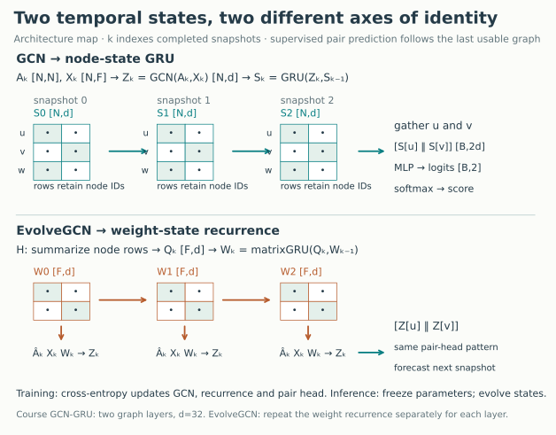
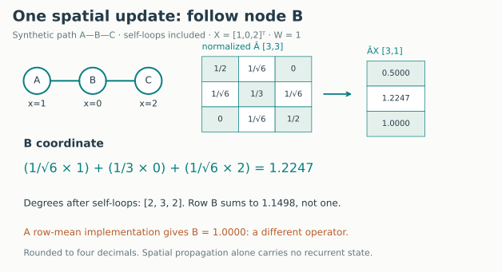
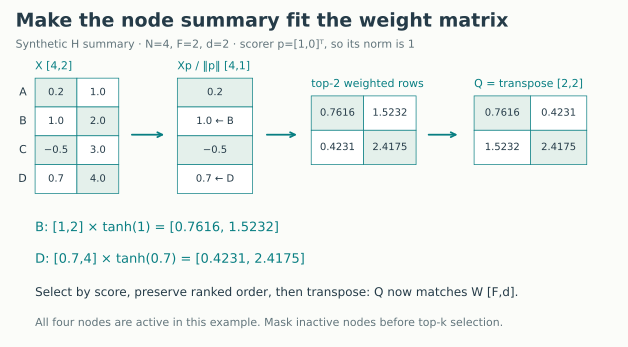
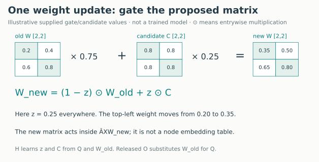
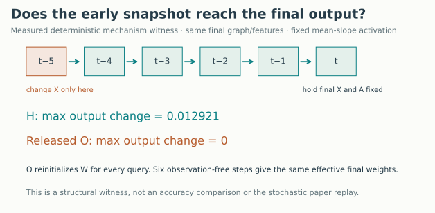
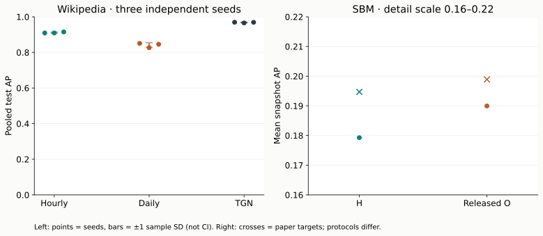

Year 3 · Quarter 3 · Lesson 107
Snapshot methods: decide what remembers
One skill: trace what crosses a snapshot boundary
A database export arrives every night. You can build a graph from each export, but a graph neural network on today's export does not automatically remember yesterday. By the end, you will implement a snapshot encoder, identify its recurrent state, and defend which observations a prediction could use. That is the practical bridge from temporal graphs to periodically refreshed relational systems.
See the idea · then trace the details
EvolveGCN: the evolving state is a weight matrix
Distinguish changing graph features from changing the graph-convolution parameters.
1Observe graph snapshots
G₁, G₂, G₃ … with node features
Each snapshot supplies its graph and node features. Node sets can differ between snapshots.
2Evolve convolution weights
Recurrent state → next GCN weight matrix
In EvolveGCN-H, summarized node embeddings help the GRU evolve weights; the O variant uses a different recurrence.
3Convolve with current weights
Current graph + evolved Wₜ → embeddings
Apply the GCN with the time-specific weights, then the task head. This is not the same state as TGN’s per-node memory.
Pause and predict: Which object is carried through time here: one memory vector per node, or convolution parameters?
The convolution parameters. The precise recurrent inputs depend on the EvolveGCN variant.
Answer: The convolution parameters. The precise recurrent inputs depend on the EvolveGCN variant.
1 · Turn a stream into a sequence of questions¶
A snapshot is a graph attached to a discrete time interval. Here snapshot k contains interactions in [kΔ, (k+1)Δ), where Δ is the window width. It is an interaction graph, not a claim that every edge remains an active relationship. Repeated interactions become an edge weight. The graph becomes available at its closing boundary (k+1)Δ; exact event times are no longer part of its count-only adjacency.
Forecast contract: use a completed graph to score later events. An hourly model answering at 09:05 can use the 08:00–09:00 snapshot. Using the finished 09:00–10:00 graph would reveal the future. A final incomplete window still has its scheduled closing boundary. We assume availability equals event time in these datasets; real late arrivals require the additional policy from L104.
This differs from nowcasting a missing edge inside a graph already observed at time k. Neither task is intrinsically wrong, but their scores answer different questions. The SBM reproduction below predicts edges in snapshot t+1 from history through t, following the paper's link-prediction definition, §4.2.
2 · Model architecture: which object remembers?¶


Diagram trace. Trace the two horizontal time paths. Which state has one row per node, and which state maps feature coordinates? On a narrow screen, scroll the figure sideways.
There are two separate directions of computation: across neighbors inside one graph, and across time between graphs. A graph convolutional network (GCN) supplies the first. A recurrent neural network supplies the second.
Our course baseline first encodes each slice, then updates a node-state matrix S. Row u of S is node u's history summary. This row must keep the same identity across slices. Our controlled experiment preallocates the released node-ID universe and initializes all rows to zero at the beginning. It then updates every row, including isolated and not-yet-observed nodes, so absence can change a state through the recurrent rule. A node’s state need not still be zero when its first event arrives. A genuinely growing registry needs a separate policy for initializing newly added rows. Reordering IDs without also reordering S silently transfers memories between entities.
EvolveGCN instead updates the GCN weight matrix W. These are feature-to-feature coefficients, not rows indexed by node identity. H consumes a summary of the current node representations when updating W. The released O update consumes W itself. This avoids a persistent per-node recurrent table in the EvolveGCN encoder; it does not recover event order lost when snapshots were built. Read the authors' method, §3 alongside the pinned implementation.
| Object | Shape | Meaning |
|---|---|---|
| A | N × N | Weighted adjacency of one completed graph |
| X | N × F | Features available for its N nodes |
| Z | N × d | Encoded node features after graph convolutions |
| S | N × d | GCN-GRU's recurrent state, indexed by node |
| W | F × d | One EvolveGCN layer's recurrent weight matrix |
| Pair logits | B × 2 | Two class scores for B supplied node pairs |
N counts nodes, F input features, d hidden coordinates, and B candidate pairs. The pair head concatenates two node vectors and maps them through a small neural network to two logits. Softmax converts those logits to a probability for the supplied candidate distribution. Cross-entropy trains the encoder and head together. This does not identify the probability that an arbitrary real-world interaction will happen without a corresponding candidate and horizon contract.
3 · Work one spatial update before adding time¶
Add the identity matrix I to A so each node can retain its own features. Let D be the diagonal matrix of row sums of A+I. The normalized adjacency is  = D^(-1/2) (A+I) D^(-1/2). One layer computes Z = σ( X W): mix feature coordinates with W, mix neighboring rows with Â, then apply a nonlinear function σ. The diagonal entries of D are degrees after self-loops were added. This is symmetric normalization; it is not generally a row-stochastic neighbor average.


For the path A—B—C, use one feature per node: X = [1, 0, 2]ᵀ and the scalar weight W = 1. After self-loops the degrees are [2, 3, 2]. B receives 1/√6 × 1 + 1/3 × 0 + 1/√6 × 2 = 1.2247. A receives 0.5; C receives 1.0. ReLU, which replaces negative values with zero, leaves these positive outputs unchanged. No term in this calculation contains yesterday's state. This is why a temporal mechanism is an additional design choice. The normalization follows EvolveGCN Eq. 1 and §3.1.
def normalized_adjacency(pairs, weights, n):
"""Add self loops, coalesce repeated edges, use row-degree normalization."""
pairs=np.asarray(pairs,dtype=np.int64).reshape(-1,2)
idx=torch.as_tensor(np.concatenate([pairs,np.stack([np.arange(n)]*2,axis=1)]).T)
val=torch.cat([torch.as_tensor(weights,dtype=torch.float32),torch.ones(n)])
a=torch.sparse_coo_tensor(idx,val,(n,n)).coalesce()
degree=torch.zeros(n).scatter_add_(0,a.indices()[0],a.values())
i,j=a.indices();v=a.values()/torch.sqrt(degree[i]*degree[j])
return torch.sparse_coo_tensor(a.indices(),v,(n,n)).coalesce()
Check: If you normalize each row to sum to one, what value does B obtain? It becomes 1.0, so this substitution changes the operator even though both implementations may be called “normalized adjacency.”
4 · Let a node remember between slices¶
A gated recurrent unit (GRU) combines new input with previous state. In the baseline, the input is node u's encoded vector Zₖ[u], and the previous state is Sₖ₋₁[u]. The same learned GRU is applied to every node row. Its gates can preserve earlier information or replace it with a proposed new state.
Our library GRU uses an update gate z with S_new = (1−z) × candidate + z × S_old: z near one retains the old state. The EvolveGCN paper's matrix update uses the opposite naming convention: z near one selects the new candidate. Symbols alone do not establish equivalent code. Both can express a gated interpolation.
A course forward pass is: completed graph → two GCN layers → rowwise GRU → concatenate candidate endpoint states → pair classifier. During training, the loss on later events differentiates through the preceding graph update. We detach the carried state at each window, so this baseline uses one-window truncated backpropagation: its values can remember farther back, but its gradients do not traverse the entire month. During evaluation, weights are frozen while states continue to update from newly available observations.
Predict before moving the control: if the new candidate is larger than the previous state, does increasing the retention gate increase or decrease the output?
The control is a scalar gate illustration with supplied candidates, not a fitted neural network. It isolates interpolation. In the real GRU, candidate and gate values are functions of the input and previous state.
Detaching the state cuts gradients, not the remembered value¶
Use a controlled one-coordinate PyTorch GRU. Set its candidate to tanh(x) with no recurrent candidate term, and hold its shared retention gate at z = sigmoid(b) = 0.25. Start at state 0. The first input is atanh(0.8), so its candidate is 0.8; the second input is 0, so its candidate is 0. Use identical weights in both steps, with no optimizer update between them.
The states are s₁ = 0.75×0.8 + 0.25×0 = 0.6, then s₂ = 0.75×0 + 0.25×0.6 = 0.15. Let the only loss be L = s₂² = 0.0225.
Repeat the calculation with s₁.detach() passed into the second step. Both states and the loss stay identical. The old input still affects the prediction through the stored number 0.6. Autograd, however, treats that number as fixed when differentiating the second step.
| Loss gradient | Full path | Detach s₁ |
|---|---|---|
| First input x₁ | 0.02025 | 0 |
| Shared gate bias b | 0.02250 | 0.03375 |
The shared gate bias still receives a gradient through its use in step 2. Truncation removes the path through step 1; it does not generally make all recurrent-weight gradients zero. The visible Wikipedia baseline detaches across windows, so distinguish how long values can carry information from how far this loss can train earlier computations.
Work it through. Replace detaching with resetting the carried state to zero. What happens to s₂? Why is that a different intervention from truncating the gradient?
Check values and learning paths
Resetting gives s₂ = 0, erasing the earlier information. Detaching keeps s₂ = 0.15. For the untruncated input gradient, multiply 2s₂ × z × (1−z) × (1−0.8²) = 0.02025. For the shared bias, full differentiation includes both occurrences of z in s₂ = 0.8z(1−z); detaching treats s₁ = 0.6 as fixed and differentiates only z×0.6. These are controlled GRU derivatives, not measured gradients from the trained benchmark.
5 · Let the graph convolution's weights remember¶
EvolveGCN-H has a different recurrent state. A layer needs a matrix W of shape F × d. Its N × F node representation cannot directly serve as an F × d matrix input. The release learns a scoring vector p, computes a score xᵤ·p / ‖p‖ for each node, selects d active rows with the largest scores, weights those rows by tanh of their scores, and transposes the result. The resulting summary Q has exactly F × d entries. Top-k selects representatives; it does not average every node. If fewer than d active rows remain, the release repeats its last selected row. An all-inactive input is unsupported by that released operation.


In this separate summary example, p = [1,0] selects nodes B and D by their first coordinate. Multiplying their entire rows by tanh of the score and transposing gives the pictured Q. The next diagram isolates the interpolation step with supplied gate and candidate values.


The matrix gates are z = sigmoid(U_z Q + V_z W_old + B_z) and r = sigmoid(U_r Q + V_r W_old + B_r). Each sigmoid produces values between zero and one. The candidate is C = tanh(U_c Q + V_c(r ⊙ W_old) + B_c), where ⊙ denotes entrywise multiplication. Then W_new = (1−z) ⊙ W_old + z ⊙ C. U and V are learned F × F matrices; each B is an F × d bias. The new W is used immediately in the current graph convolution. These are the matrix recurrence and summary in §3.4.
Implementation prediction: Is setting z=1 a “remember everything” setting in this matrix recurrence? No: it discards W_old's direct interpolation contribution, although W_old can still influence the candidate through the reset path.
A consequential release discrepancy. Paper §3.5 specifies an LSTM for O, including a separate cell state. The released egcn_o.py uses the matrix-GRU-style gate code and feeds W_old as its own input. Our replay preserves the code and labels it released O. A matching released score cannot establish an LSTM reproduction.


There is a second, subtler boundary: the release restarts W from learned initial weights for every six-slice query. In released O, each weight update ignores observations. Six identical recurrent transformations therefore produce the same final effective weights for every window. Holding the final graph/features fixed and replacing an earlier graph's features leaves the deterministic final output unchanged. H can respond because its summary depends on those earlier features.
Our witness replaces stochastic RReLU activations by their fixed mean slope to isolate this dependence; it is not a paper-score run. With stochastic activations enabled, changing earlier signs may consume different random draws and perturb later outputs. That random-stream effect is not evidence that the model learned useful historical content. Trace the data dependency, then test it.
6 · Predict, then inspect the evidence¶
Before the table, write a ranking for hourly snapshots, daily snapshots and event-based TGN. Give a reason and one observation that would make you revise it.
Wikipedia course comparison — held fixed: the released train/validation/test populations, positive questions, negative destination arrays, raw edge features, three seeds, ten epochs, learning rate 0.001, hidden width 32, validation-AP checkpoint selection, and pooled metrics. All arms use strict-past information; graph windows are accessible only after closing. TGN keeps event timing and raw messages, whereas the snapshot model uses per-node mean incident features, counts and a completed-window graph. Thus accessible past information is intentionally represented with different delays and compression. The snapshot baseline does not receive individual event timestamps after aggregation.
Varied: architecture and its update schedule; snapshot width is one hour or one day. Epoch counts do not equalize optimizer-step counts or gradient horizons. Snapshot evaluation rebuilds its history under frozen weights; TGN carries the selected online training/validation memory, including pending messages. State construction is another system difference. There is one dataset and a fixed configuration, not a hyperparameter search proving which family is best. The compact TGN here is a fresh course fit, not one of L102's published-target scores. AP is precision averaged at positive-score thresholds; AUROC measures positive-versus-negative score ordering, giving half credit to ties. Both are pooled over the entire test set here, unlike some source batch averages in L106.
SBM released replay — a different lane: full 1,000-node, 50-snapshot dataset; H and released O, seed 1234, released configuration and up to 100 epochs with the released patience rule. The 0-based input-window end indices are 5–33 for training, 34–38 for validation and 39–48 for test; labels come from the following snapshot. num_hist_steps=5 yields six inputs, t−5 through t. Validation and test evaluate all 1,000,000 ordered node pairs, including self-pair negatives. The paper's MAP is mean snapshot-level average precision, and its MRR averages reciprocals of all positive ranks within each source node, then across nodes and snapshots. It is not reciprocal rank of just the first correct neighbor.
Author-run reference evidence, not your current notebook output.
| Wikipedia arm | Pooled AP, mean ± sample SD | Pooled AUROC, mean ± sample SD | Complete fits |
|---|---|---|---|
| Hourly GCN-GRU | 0.9112 ± 0.0034 | 0.9023 ± 0.0030 | 3 × 10 epochs |
| Daily GCN-GRU | 0.8411 ± 0.0128 | 0.8259 ± 0.0100 | 3 × 10 epochs |
| Compact TGN | 0.9680 ± 0.0021 | 0.9668 ± 0.0019 | 3 × 10 epochs |
Each fit covers all 81,029 training, 23,621 validation and 23,621 test positive events. Predictions are matched by raw event ID and class before comparing methods. SD measures variation across these seeds, not uncertainty over datasets or future deployments.
| SBM variant | Epochs / selected epoch (0-based) | MAP / paper | MRR / paper | Numeric verdict |
|---|---|---|---|---|
| Released H | 67 / 15 | 0.1793 / 0.1947 | 0.0132 / 0.0141 | MAP FAIL; MRR CLOSE |
| Released O | 100 / 90 | 0.1900 / 0.1989 | 0.0143 / 0.0138 | MAP CLOSE; MRR CLOSE |
H MAP misses the predeclared CLOSE threshold: absolute gap 0.015423 exceeds 0.015. The full declared run completed, but this published number was not numerically reproduced within that tolerance. Source agreement does not erase the gap; no test-driven retuning was performed.
Interpretation: Wikipedia ranks these configured systems on one frozen candidate population. It does not isolate the effect of discretization: encoder, update frequency and gradient horizon also change. The SBM cells test a named released configuration, with source/prose and runtime deviations retained. Neither lane establishes full-paper or historical identity.


What would count as reproduction?¶
The source/data audit independently checks all 50 snapshot adjacencies, degree features and normalizations. The port is checked against the original model's values and gradients; pair-head chunking is checked against one unchunked loss/gradient calculation. Saved prediction files support independent metric reconstruction. The original metric methods and independent formulas also run in the pinned environment. Tied scores expose a small runtime dependency in NumPy’s default rank ordering; a separate audit bounds all rankings within each tied group. These checks establish specific properties, not historical identity.
Remaining deviations are substantive: current libraries and hardware; one explicit negative-sampler RNG stream instead of eight worker streams; chunked gradient reduction; degree-feature dimensionality scanned across future snapshots in the release; stochastic RReLU left active during validation; and the O GRU/LSTM discrepancy. The degree scan fixes a feature schema from later data, so the paper replay must not be advertised as a clean production information protocol. See the complete reproduction contract and source manifest. All other datasets, baselines and paper ablations are NOT_RUN.
7 · Lab: make the memory contract executable¶
Open the student notebook, prepared HTML, or executed solution. The notebook includes the readable models and training loops. Its short, full-data daily fit is teaching evidence; the longer named experiment is a separately gated replay.
- TODO 1: construct a weighted, self-looped normalized adjacency. Preserve repeated-edge counts.
- TODO 2: implement the matrix-state update with the paper's gate convention. A wrong interpolation direction must fail the gradient/value check.
- TODO 3: return only bins whose closing boundary is available at a query. Equality at the closing time is legal; equality with an event inside the current unfinished bin is not enough.
After each task run its CHECK. The graph layer, recurrence and full-data availability audit call your functions; the notebook never silently replaces your answers. Then predict the history-intervention outcome and run the experiment.
EXIT · defend a snapshot model¶
Explain a prediction at 09:05 for an hourly model: identify the last usable graph, the recurrent object's shape, the pair head, and which observations update the state afterward. Distinguish absent nodes from unseen nodes. Explain why source parity, a nearby MAP and a large state are each insufficient to prove historical reproduction or useful temporal memory. Finally, propose one matched intervention to separate information delay from model capacity.
Send your code and written defense to the teacher for feedback; ask follow-up questions about any unclear step. The package is PENDING_WRITTEN_DEFENSE, not a record of learner mastery.
Primary reading: Pareja et al., EvolveGCN, §3–4, especially Figures 1–2 and Table 2, then compare egcn_o.py and splitter.py in the publication-era source. For the event-based alternative, revisit TGN §3 and L102. Keep the snapshot reference beside your implementation.
Next: L108 makes temporal neighbor sampling efficient. The question changes from “what history is legal?” to “how can we retrieve enough of that history within a batch budget?”
Carry this forward. Retrieve a bounded event history without confusing a faster implementation with a changed sampler. Continue to Lesson 108.